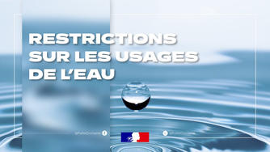

[JJ][mois]
Arrêté préfectoral
Nouvelles restrictions sur l'usage de l'eau à compter du 31/10/2026
Alors que la période officielle de soutien d’étiage se termine au 31 octobre, la situation hydrologique de la Haute-Garonne reste fragile et justifie la poursuitedes mesures de restriction d’usage en vigueur.